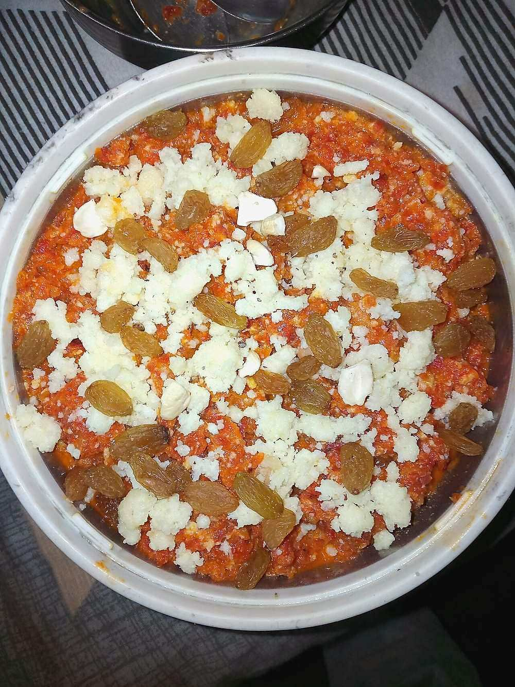

Gajar ka Halwa
grated winter carrots cooked down in milk and ghee until dark, dense and cardamom-scented

Contains: milk, tree nuts
Ingredients
Quantities for 6.
- 1.2kg, grated coarse Carrotred winter carrots if you can get them; they are sweeter and less watery
- 1 litre, full fat Milk
- 150g Sugaradjust to how sweet the carrots are
- 5 tbsp Ghee
- 150g, crumbled Khoyaor 3 tbsp milk powder stirred into the mix
- 8 pods, seeds crushed Cardamom
- 15, halved Cashewoptional
- 15, slivered Almondsoptional
- 3 tbsp Raisinsoptional
- 2 tbsp, slivered, to finish Pistachiosoptional
Cookware
stovetop, kadhai
Checked against the ingredient list for ten allergens: milk, egg, fish, crustaceans, tree nuts, peanuts, sesame, mustard, soy and gluten. Brands vary, so read the label on anything new to you.
Before you start
- Grate the carrots on the coarse side of the box grater, not in a food processor. Processed carrot turns to wet pulp and the halwa never dries out.
- Use a wide heavy pan. A narrow pan means the milk takes twice as long to reduce.
- Crush the cardamom seeds fresh in a mortar just before adding; pre-ground loses its scent fast.
Method
- Fry the cashews, almonds and raisins in 1 tbsp of the ghee for 2 minutes until the nuts are gold and the raisins puff, then lift them out.
- Add 2 tbsp ghee to the pan and fry the grated carrot on medium for 10 minutes until it darkens and smells sweet.This step drives off raw water early and deepens the colour. Do not skip straight to the milk.
- Pour in the milk and bring to a boil, then drop to medium-low.
- Simmer uncovered 40 to 45 minutes, stirring every 5 minutes and scraping the base and sides.Scrape the caramelised ring off the sides back into the pan each time. That is where the flavour is.
- Keep going until the milk is almost entirely gone and the mass pulls together when you draw the spoon through it.
- Add the sugar and stir. The mixture will go loose again as the sugar melts.Sugar goes in only after the milk has reduced. Add it early and the carrots stop softening.
- Cook 10 minutes more on medium until that liquid has gone too.
- Stir in the crumbled khoya and the remaining 2 tbsp ghee and cook 8 minutes until the halwa is glossy and leaves the sides of the pan.
- Fold in the crushed cardamom and most of the fried nuts and raisins.
- Take off the heat, rest 10 minutes, and serve warm topped with the pistachios and remaining nuts.
Storage
Keeps 5 days refrigerated in an airtight box. Reheat portions in a pan with a teaspoon of ghee, or microwave 40 seconds. Freezes 2 months; thaw overnight in the fridge before reheating.
Nutrition Medium estimate
Medium protein: 16 g a serving, 11% of the calories
| Per serving448 g | Per 100 g | |
|---|---|---|
| Calories | 569 kcal | 128 kcal |
| Protein | 15.8 g | 4 g |
| Carbohydrate | 70.0 g | 16 g |
| of which sugars | 58.1 g | 13 g |
| Fibre | 6.8 g | 2 g |
| Fat | 27.2 g | 6 g |
| of which saturated | 14.4 g | 3 g |
| of which unsaturated | 10.8 g | 2 g |
Ingredients given to taste count as zero, so the real figures run a little higher. Estimated from raw ingredients using USDA FoodData Central.
More like this: Vegetarian Indian recipes · Gluten-free Indian recipes · No onion no garlic recipes · Punjabi recipes
Times, yields, allergens and nutrition are guidance. Use your own judgement on doneness and on storing. More in About.